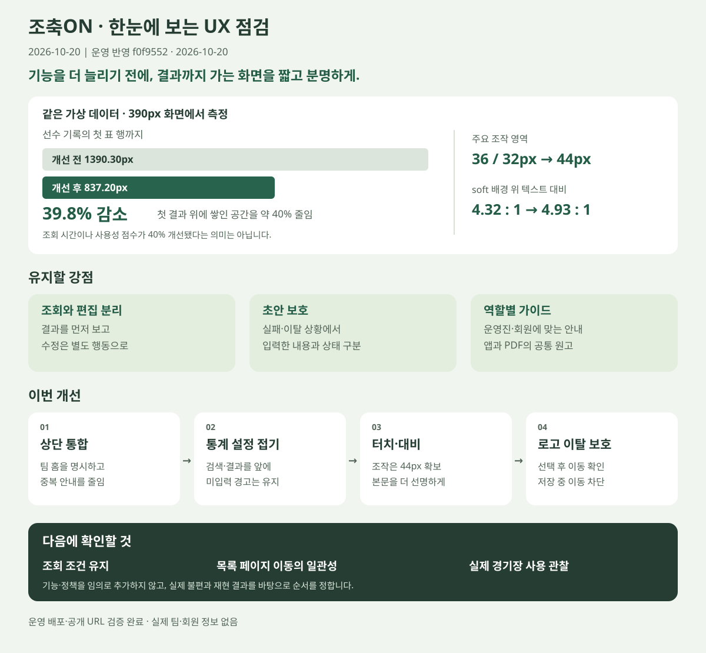

조축ON · 한눈에 보는 UX 점검
2026-10-20 · 운영 반영 f0f9552 · 2026-10-20
운영 배포 및 공개 URL 검증을 완료했습니다.
메뉴와 설명이 결과보다 먼저 쌓이는 문제를 줄입니다. 집계 기준·권한·실제 경기 데이터는 바꾸지 않습니다.

유지할 강점
- 조회와 편집 분리
- 초안과 실패 상태 보호
- 역할별 앱·PDF 가이드
이번 개선
- 상단 문맥 통합과 팀 홈 진입
- 통계 설정 접기, 경고 유지
- 44px 조작 영역과 텍스트 대비
- 로고 미저장·저장 중 이탈 보호
후속 검토
- 메뉴 전환 후 조회 조건 유지
- 목록 페이지 이동의 일관성
- 실제 경기장에서 운영진 사용 관찰